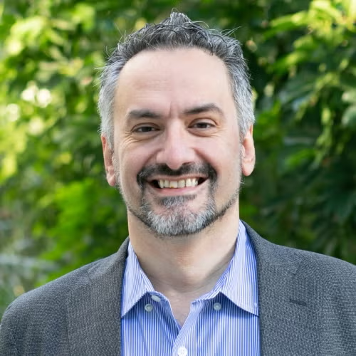
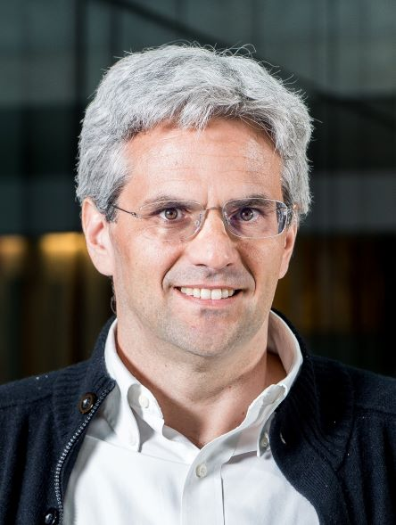
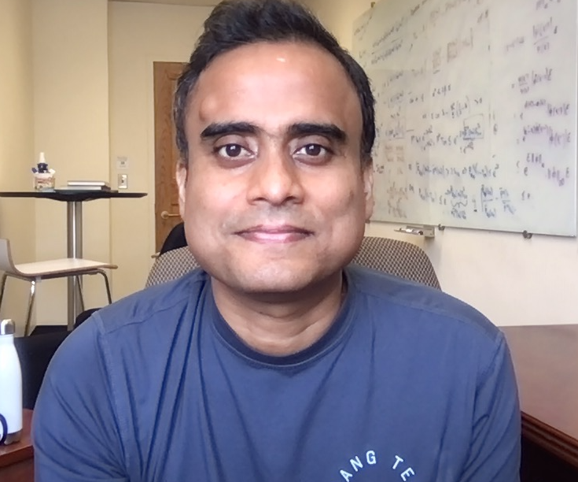
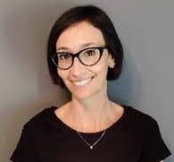
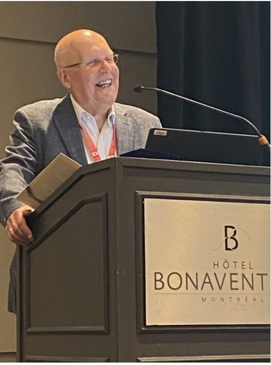
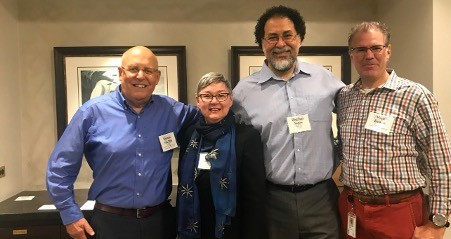
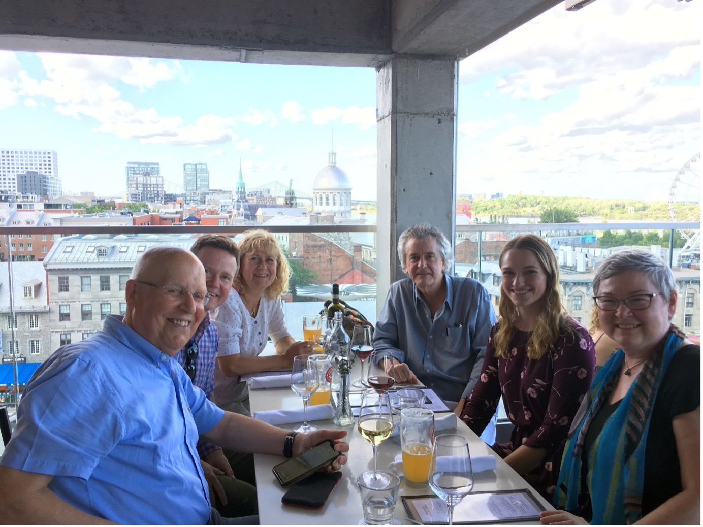
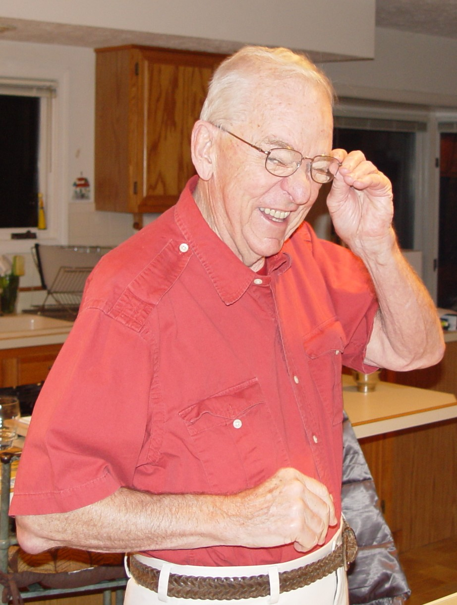

MESSAGE FROM THE PRESIDENT

Welcome to the first ISBA Bulletin in 2025! This is my first message to the Bayesian community from this column. As Aad van der Vaart transitions from President to Past President, we extend our sincere thanks for his exemplary service. We also salute Amy Herring as she steps down from the Executive Council after three outstanding years, and we warmly welcome Antonio Lijoi as President-Elect.
I start my term as President during interesting and rapidly changing times. ISBA is not a political organization, but we are not immune to political and economic changes. Restrictions on conference participation, evolving funding environments, and shifting visa policies have real implications. These challenges shape how we connect, collaborate, and continue our mission.
The hallmarks of ISBA
In moments like these, it is especially important to pause and reflect on ISBA, our mission and why it matters. ISBA is more than just a professional affiliation; it is a supportive and dynamic community dedicated to promoting Bayesian analysis worldwide and fostering the next generation of researchers. Recently, I reached out to the leaders of ISBA’s Sections to gather their perspectives on what ISBA means to them. The responses consistently described our society as a space where important connections are formed - both socially and scientifically - through our conferences, section activities, and other initiatives. ISBA is seen as a space where we can keep pace with developments across the Bayesian landscape, and where junior researchers can easily engage with senior colleagues. This doesn’t come without effort. ISBA invests heavily in supporting students and early-career researchers. For the 2024 World Meeting in Venice, ISBA allocated around $85,000 in combined society and sponsor funds for young travel support. Individual Sections also provide substantial funding for student participation in their meetings. Membership fees remain highly accessible - just $5 per year for students.
ISBA also sponsors several awards. A full list is available here. Among them, the most prominent is the Savage Award, presented annually to recognize two outstanding doctoral dissertations in Bayesian econometrics and statistics. The finalists for the 2024 Savage Award are featured in the Awards Section of this bulletin. In addition, calls for nominations for the 2025 DeGroot Prize, Mitchell Prize, and Savage Award are now open, with submissions due by May 31, 2025. Many thanks to the ISBA Prize Committee and its subcommittees for their work on the selection process.
ISBA also publishes and financially supports Bayesian Analysis, now consistently ranked among the top journals in statistics and probability. For recent updates and future directions, see the section on Bayesian Analysis in this bulletin by its new Editor-in-Chief, Igor Prünster. Many thanks to the editorial board of the journal for their continued dedication and service.
In addition to conferences - where members receive discounted registration - many ISBA sections offer publicly accessible webinars. Recordings of these events are often available on our YouTube channel, which now features over 150 videos and more than 1,320 subscribers.
The future: Challenges and Opportunities
Looking ahead, we need to think strategically about how to meet the challenges before us. In my brief survey of Section leaders, many expressed a desire for ISBA to offer new ways to foster collaborations. Suggestions included a more visible social media presence to centralize announcements and opportunities, more virtual events - such as onboarding sessions for new members, webinars, and online reading groups organized around shared research interests - and informal structures to encourage cross-Section engagement. There was also interest in seeing ISBA take a stronger role in connecting academia and industry, by highlighting real-world applications of Bayesian methods and encouraging participation from practitioners outside academic settings.
Following this input, for the first time ever, as an experiment to foster connections with industry and members, ISBA and the Section on Bayesian Statistical Science (SBSS) of the American Statistical Association are exploring the possibility to host a joint community table in the exhibit hall of the 2025 Joint Statistical Meetings (JSM), taking place August 2–7 in Nashville, TN.
At a broader level, expanding ISBA’s geographic footprint is critical. Our Asian Chapter is a strong example of successful regional growth, that has lead to a now annual conference. I encourage participation to this important event. The next meeting will be held on July, 4-5, 2025, at Kyungpook National University, in South Korea. It will also be important to seize opportunities to strengthen our presence in Australia and Southeast Asia. Latin America has an active participation, and continued support is essential to help overcome resource limitations. Africa also presents significant potential, and ISBA should explore ways to increase engaxgement and provide support in regions where financial and institutional barriers remain high.
It’s also important to broaden ISBA’s intellectual and disciplinary reach. We should aim to be a home for all users of Bayesian methods - not just statisticians, but also Bayesians in machine learning, cognitive science, psychology, ecology, economics, and especially the social sciences. I believe that the proposed Bayesian Social Sciences Section is a significant step in that direction. A petition for a Bayesian Deep Learning Section is also in the making. These activities shows our commitment to creating a home for all communities applying Bayesian tools to complex, real-world problems.
This is not just about outreach - I believe it is vital to the future of Bayesian statistics and ISBA. To support that future, ISBA must remain open, outward-facing, and deeply connected to the broader scientific communities we aim to serve.
Recognizing pioneers
In this issue, we honor the lives and legacies of two important figures for our community: Herman van Dijk and John Deely. Herman van Dijk made foundational contributions to Bayesian econometrics and helped shape how Bayesian methods are applied to macroeconomic and financial modeling. John Dely has made contributions in many areas including engineering, biological sciences, agriculture and business. He was known for his humor, real-world examples, and ability to make statistics both accessible and compelling. Both Herman van Dijk and John Deely embodied a vision of Bayesian analysis that transcended disciplinary boundaries - precisely the spirit ISBA strives to cultivate.
Conferences: Innovation and Tradition
Conferences are central to ISBA’s mission, fostering collaboration and knowledge exchange within the Bayesian community. To address evolving global challenges, ISBA is forming a committee to explore innovative conference formats, including “hub meetings.” These involve regional in-person gatherings interconnected via digital platforms, allowing participants to engage locally and globally. This model aims to mitigate environmental impact, reduce costs, and improve accessibility. The success of virtual events like the Bayesian Young Statisticians Meeting (BAYSM) also demonstrates the viability of such approaches. For instance, BAYSM 2025, scheduled for April 7-11, 2025, will be fully online, providing a platform for early-career Bayesian researchers to connect and share their work. By integrating traditional in-person meetings like our flagship World Meeting with hub and virtual conferences, ISBA may be able to adapt to changing circumstances while maintaining a vibrant, inclusive community.
On that note, I’d like to remind you of the call for invited sessions for the 2026 ISBA World Meeting, which will take place from June 28 to July 3, 2026, in Nagoya, Japan. Please see the updates from the Program Council later in this bulletin for more details.
We also have a number of Section meetings planned for this year - for example, O’Bayes 2025, Bayes Comp 2025, BNP 14, and the first meeting of the Bayesian BioPharm Section, BBP 2025 - all taking place in June 2025. EnviBayes is also exploring the possibility of a meeting later this year. For more details on conferences around the world, check out the News from the World section of the bulletin, thoughtfully curated by D'eborah Sulem.
Thanking those that keep ISBA running
Finally, I’d like to express my sincere thanks to those who play essential roles behind the scenes in ISBA. Many in our community deserve recognition for their dedicated service - including the Board of Directors, the Program Council, Section leaders, members of ISBA’s various committees, our Treasurer Yanxun Xu, our Secretary Xinyi Xu, and our Administrative Assistant Colleen Martin. ISBA would not be what it is without such committed and dedicated members.
Today, I would like to give a special thanks to the editorial board of the ISBA Bulletin for their continued work in shaping and curating its content. In particular, I want to acknowledge Francesco Denti for his creative redesign, which has brought a fresh and engaging look to our publication.
I’m also grateful to our social media team - Julyan Arbel, Andrew Brown, Clara Grazian, and Staci Helper - for their dedication to expanding ISBA’s visibility and reach. A special thanks to Andrew Brown as well for his work as web editor.
Please consider following and engaging with ISBA on BlueSky and LinkedIn. As always, I encourage you to share news, achievements, and initiatives from your departments and institutions. This kind of collective sharing and mutual support helps keep our community strong and connected - especially in times when external challenges may test our spirits.
Last but not least, I would like to remind you to renew your ISBA membership or, even better, to become a lifetime member! A large membership base is essential to allow ISBA to foster an international community interested in Bayesian analysis and its applications.
FROM THE EDITOR
Welcome to the first issue of the ISBA Bulletin of 2025! I’ll keep this brief, as this edition is packed with important updates and events for the new year. First, I’d like to warmly welcome all our new Board members and thank them for their contributions to this issue.
You may have noticed a refreshed look for the bulletin – a great way to start the new year on the right foot! A huge thank you to Cecilia Balocchi for her valuable input on this. We hope you like it! This is just the first version, and we’d love to hear your feedback, so feel free to share any suggestions with us. For those who prefer the classic format, the good old PDF version is still available – just check the menu on the left.
ISBA Community, stay up to date with all ISBA activities and events (in your preferred format!), and enjoy this issue!
FROM THE PROGRAM COUNCIL
New Member
Yang Ni has joined the Program Council as the new Vice-Chair. We are incredibly grateful to Sinead Williamson for her dedication and exceptional service on the Program Council in the past three years and for organizing such a fantastic program at the 2024 World Meeting last year in Venice. Thank you, Sinead, and welcome, Yang!
(Co)-sponsorship & Endorsement Requests
If you are planning a meeting and would like to request financial sponsorship (or co-sponsorship) or non-financial endorsement from ISBA, please submit your request to the Program Council at this email address. Detailed information on how to submit requests for sponsorship or endorsement is available at this link.
ISBA 2026 Call for Invited Sessions.
The 2026 ISBA World Meeting will be held from June 28th to July 3rd, 2026 in Nagoya, Japan. Information about the meeting will be added to this website. Please check the website regularly for updates.
The Scientific Committee welcomes proposals for Invited Sessions for the 2026 ISBA World Meeting. Invited Sessions are 90-minutes long and feature (i) three (3) speakers, an optional discussant, and a session chair; or (ii) a panel discussion with between three (3) and six (6) panelists and a session chair who will moderate the discussion. All invited talks, discussions, and panel discussions are expected to be delivered in-person. Organizers should confirm availability of session participants prior to submitting a proposal.
Please submit proposals using this form. Proposals will be accepted until 11:59pm (Anywhere on Earth) on 6 July 2025. The results will be announced by the end of August, and after that, there will a call for individual contributed oral presentations and posters. You can also access this form from the meeting website.
ISBA 2026 Call for nominations for Named Lectures
The ISBA Program Council and the committee of Named Lectures for the 2026 ISBA World Meeting, announce a call for nominations for lecturers of the Bruno De Finetti and Susie Bayarri Lectures. The deadline to submit nominations for these lectures is Sunday April 15th, 2025.
The Bruno de Finetti Lecture is delivered at the ISBA World Meetings by an outstanding scholar who has provided significant contributions to the advancement of Bayesian Statistics. The lecture was created to honor de Finetti’s influential work and is funded by an endowment created by numerous scholars and Italian institutions to mark the 30th anniversary of his death in 2015.
The Susie Bayarri Lecture is delivered at the ISBA World Meetings by an outstanding young researcher who has received a terminal degree in a statistically related field no more than ten years prior to the award’s calendar year. Eligibility extensions will be permitted under the following circumstances, which should be outlined in the nomination letter: parental-leave; long-term illness; military, public or civil service; care for a dependent; bereavement. The lecture is named to honor the memory of lifetime member M. J. Susie Bayarri.
Nominations may be made by any ISBA member and should include a nomination support letter. For the Susie Bayarri Lecture nominations should also include the nominee’s CV, specifying the year their terminal degree was awarded. All nominations should be prepared in a single pdf file and sent to the Program Council at this email address.
UPDATES FROM BA

Bayesian Analysis has been a remarkable success story since its inception in 2004. As the flagship journal of ISBA, it has provided a high-quality and fully open-access outlet for the dissemination of Bayesian ideas, covering theory, methods, and applications. The journal continues to attract a high volume of submissions, with almost 300 received in 2024. A defining characteristic of Bayesian Analysis, much like ISBA itself, is its global dimension. In the past three years, papers published in the journal have included authors affiliated to institutions from 30 different countries.
Although bibliometric indicators should be taken with caution and not over-interpreted, they do offer some perspective on the journal’s reach and influence. For 2023, Bayesian Analysis achieved an Impact Factor of 4.9, ranking 6th out of 168 journals in the Statistics & Probability category. The Article Influence Score was 2.821, ranking 12th in the same category. Notably, if we exclude survey, software, and econometrics journals, Bayesian Analysis ranks first in terms of Impact Factor and 5th in Article Influence Score, right behind Annals of Statistics, JRSS-B, JASA, and Biometrika. More generally, the journal remains in the first quartile across virtually all bibliometric indicators.
It is a great honor to serve as the new Editor-in-Chief of Bayesian Analysis. I would like to express my deep gratitude to Mark Steel for his outstanding leadership during his term and for his generous help in ensuring a smooth transition. The journal’s success is a testament to his efforts, as well as those of the previous Editors-in-Chief and their Editorial Boards. Credit is also due to the ISBA leadership at the time of the journal’s founding, who made the visionary decision to establish Bayesian Analysis as a fully open-access journal. ISBA fully supports Bayesian Analysis as an open-access journal and contributes to the payment of its publication fees. These per-page fees cover all aspects of the publishing process, including platform management, manuscript editing, and website maintenance. To ensure the journal’s sustainability, I encourage all members to consider contributing to these costs when renewing their ISBA membership or upon paper acceptance.
In line with BA’s tradition, the Editorial Board has been substantially renewed to ensure it continues to represent the broad and evolving spectrum of research topics at the forefront of Bayesian statistics, while also supporting a healthy rotation. The new board consists of 11 Co-Editors and 50 Associate Editors. In shaping the new board, I sought to maintain continuity, while also strengthening the representation of Asia to reflect its increasing in the Bayesian community. I extend my sincere thanks to the outgoing Co-Editors, Petros Dellaportas, Gonzalo García-Donato, Thanasis Kottas, Eduardo Gutiérrez-Peña, Mario Peruggia, and Judith Rousseau, for their dedicated service over the years. At the same time, I am pleased to welcome the new Co-Editors: Ismaël Castillo, Nicolas Chopin, Michael Daniels, Long Nguyen, David Nott, and Yanxun Xu. I am also deeply grateful to the outgoing Associate Editors for their contributions. Space constraints prevent me from mentioning everyone by name, but I extend special thanks to Abel Rodriguez, Marco Ferreira, and Gabriel Huerta for their extraordinary service of 12 years or more. The full new editorial board can be found at this link.
The March issue of Bayesian Analysis is now available on the journal’s website. Among many excellent contributions, it features a discussion paper titled “Sparse Bayesian Factor Analysis When the Number of Factors Is Unknown” by Sylvia Frühwirth-Schnatter, Darjus Hosszejni, and Hedibert Freitas Lopes. This paper has garnered a record 18 discussions, highlighting its broad impact and the dedication of Mark Steel in overseeing its publication.
Looking ahead, my primary goal is to maintain the high quality of Bayesian Analysis. To achieve this, I will need the support of the entire Bayesian community in submitting their best work to the journal. On our side, the new editorial board has committed to upholding more stringent timelines for processing papers. Our objective is to minimize “outliers” at all costs and ensure less variable and more consistent turnaround times, while preserving the high-quality feedback that has long been a hallmark of the journal. I hope that this will further incentivize researchers to consider Bayesian Analysis as the preferred outlet for their top-tier work.
Finally, Bayesian Analysis will continue its tradition of openness, providing full consideration to all papers involving Bayesian ideas. This includes a broad spectrum of contributions ranging from mathematical developments to substantive applications, while being also receptive to hybrid methodologies that combine Bayesian principles with other statistical and machine learning approaches. With help of the Bayesian community I will do my best in trying to further enhance the journal’s excellence. If you have any suggestions, please feel free to reach out!
AWARDS
 
The ISBA Prize Committee and sub-committees have carried out the difficult task of identifying winners and honorable mentions from several nominations for the Savage Award and The Mitchell Prize. This August, the ISBA Awards Ceremony will take place at the ASA SBSS reception in the Joint Statistical Meeting, which will be held in Nashville, USA, during August 2–7, 2025. In this issue, we celebrate the Savage Finalists as well as the 2025 Calls for the Savage Award, the DeGroot Prize, and the Mitchell Prize.
Savage 2024 Award Finalists
In the category of Applied Methodology, the three finalists (in alphabetical order of their last name) are: Nicholas Marco for the thesis “Mixed Membership Models with Applications to Neuroimaging” (Supervisors: Donatello Telesca); Mélodie Monod for the thesis “Bayesian Models and Methods to Estimate Age-specific Infectious Disease Transmission Dynamics: Integrating Disease Surveillance Time Series, Mobility, and Vaccination data” (Supervisors: Oliver Ratmann and Samir Bhatt); and Alessandro Zito for the thesis “Ecological Modeling via Bayesian Nonparametric Species Sampling Prior” (Supervisor: David Dunson).
In the category of Theory and Methods, the two finalists (in alphabetical order of their last name) are: María Fernanda Gil-Leyva for the thesis “Stick-breaking processes and related random probability measures” (Supervisor: Ramsés H. Mena); and Takuo Matsubara for the thesis “Bridging the gap between modelling and computation in Bayesian statistics” (Supervisor: Chris Oates).
The Savage Award 2024 sub-committees comprised Veronica Berrocal (Chair), Roberta De Vito, Dani Gamerman, Clara Grazian, Andrew Holbrook, Juhee Lee, and Andrew Zammit-Mangion, for the category of Applied Methodology; and Marta Catalano, Peter Hoff, Jaeyong Lee (Chair), Kyungjae Lee, Feng Liang, Depdeep Pati, and Yanxun Xu, for the category of Theory and Methods. The Prize Committee is grateful for the timely and thorough review carried out by both sub-committees.
The Savage finalists’ presentations have been scheduled on Monday, August 4, 2025, 10:30 AM - 12:20 PM at the Joint Statistical Meetings (JSM), to be held in Nashville, USA. You are invited to attend, and we hope to see many of you there!
2025 DeGroot Prize, Mitchell Prize, and Savage Award Call
The Prize Committee of ISBA is pleased to announce the 2025 DeGroot Prize, Mitchell Prize, and Savage Award. The deadline to submit nominations for these awards is May 31st, 2025.
The DeGroot Prize is awarded to the author (or authors) of a published book in Statistical Science. For details on the DeGroot Prize, including names of past winners and eligibility details, please visit this page. The Prize includes a check for $1500; the winner(s) will be announced during the ISBA World Meeting in Nagoya, Japan, in 2026.
The Mitchell Prize is given in recognition of an outstanding paper that describes how a Bayesian analysis has solved an important applied problem. The prize includes a check for $1000 and a plaque; the winner(s) will be announced at the World Meeting in Nagoya, Japan, in 2026. For details on the Mitchell Prize, including names of past winners, eligibility details, and submission information, please visit this page.
The Savage Award, named in honor of Leonard J. “Jimmie’’ Savage, is bestowed each year to two outstanding doctoral dissertations in Bayesian econometrics and statistics, one each in Theory & Methods and Applied Methodology. Up to two awards of $1000 will be awarded. Finalists will be notified in mid-December and invited to present their dissertation research at a special contributed session at the ISBA World Meeting in Nagoya, Japan, in 2026. The winners will also be announced in this World Meeting. For details on the Savage Award, including names of past winners, eligibility details, and submission information, please visit this page.
Nominations for the Mitchell Prize, Savage Award, and DeGroot Prize may be made by any ISBA or SBSS member. To join ISBA, please go to this page. Finally, questions regarding any of the Prizes or Awards may be sent to the ISBA Prize Committee at this email.
JUNIOR ISBA
New j-ISBA Board Members
With the start of 2025, the newly elected officers have joined the j-ISBA Board. Please join me in welcoming our new Chair-Elect, Francesca Panero, and our new Treasurer, Alessandro Zito. You can find their brief biographies on the j-ISBA website at this link.
A big “thank you’’ goes to our outgoing Board Members Beatrice Franzolini and Beniamino Hadj-Amar for their hard work and outstanding service to j-ISBA in 2023 and 2024!
j-ISBA will hold elections again this year for the positions of Chair-Elect, Program Chair and Secretary; announcements will follow in the upcoming months.
Upcoming events and ongoing activities.
BaYSM 2025, the official annual conference of j-ISBA, will take place online on April 7-11, 2025. It will offer a great and accessible platform for young researchers from all over the world to share their work and engage with peers and established professors in the Bayesian community. We have received a stellar collection of abstracts and we cannot wait to hear more about these research works in oral presentations and short talks. We are also delighted to have five plenary speakers: Samuel Livingstone (University College London), Julia Palacios (Stanford University), Fernando Quintana (Pontificia Universidad Católica de Chile), Surya Tokdar (Duke University) and Stéphanie van der Pas (Vrije Universiteit Amsterdam).
Registration is only $5 for all j-ISBA members, so don’t forget to renew your membership!
The 2025 edition of the Blackwell-Rosenbluth Award is upcoming! The award aims at recognizing outstanding junior Bayesian researchers, based on their overall contributions to the field and to the community. While the call will open in April 2025, you might start thinking about a nomination! PhD students or early career researchers who obtained their PhD after January 1, 2020 will be eligible.
The j-ISBA Peer mentoring Scheme offers a platform for you to be paired online with another young researcher in the field, providing a friendly and secure place to seek support and guidance. Peer mentors are j-ISBA members who have volunteered to join the program. Based on their experiences, they will be able to offer you advice on how to navigate the uncertainties and difficulties that may arise during your early years in research.
Accessing peer mentoring is extremely simple! Just look through the list of available peer mentors here for the one that may best match your needs, and contact them via email to ask to schedule a first virtual meeting.
Do not miss out the following j-ISBA organized and sponsored sessions in 2025:
Sponsored session at Bayesian Inference in Stochastic Processes, Milan, Italy 26 - 28 May 2025
Speakers: Louise Alamichel, Lorenzo Ghilotti, and Giovanni Rebaudo
Parallel Computations for Markov chain Monte Carlo speakers at Bayes Comp 2025, Singapore, 16 - 20 June 2025
Speakers: Dootika Vats, Lu Yu, and Sebastiano Grazzi; Discussant: Charles Margossian
New advances in Bayesian statistics at CFE-CMStatistics 2025, London, UK, 13 - 15 December 2025
Speakers: TBC
You can also look forward to a j-ISBA reception at the upcoming 14th International Conference on Bayesian Nonparametrics (BNP 14), Los Angeles, USA, 23 - 27 June 2025!
For any questions or suggestions please feel free to reach out to the j-ISBA board via e-mail at this email address.
NEWS FROM THE WORLD

Q&A: what do you think?
How has your research evolved along your career? And why?
Christian Robert (Université Paris-Dauphine)
Unsurprisingly, as for most researchers, the actual switches in my research themes have been primarily driven by chance encounters, rather than by deliberate choices to drift away from theoretical decision theory towards computational interests.
For instance, while I was contemplating a PhD topic involving differential geometry, with an offer from a top researcher in Paris, I happened to meet Jean-Pierre Raoult, a professor in Rouen, Normandy, working on James-Stein estimation, who shared his enthusiasm well-enough for me to work under his direction, despite facing a one-hour train commute to Rouen. It gave me the opportunity to collaborate with several lecturers, which would have been unlikely in a Paris lab. And, since the topic was far from popular with the—then mostly anti-Bayesian—French statistics community at the time, this choice made me seek a postdoctoral position in the USA, where I ended up working with Bayesian luminaries at Purdue University, then Cornell University, with a strongly influential impact on my career.
Similarly, at the end of my postdoc, I happened to attend a Bayesian workshop in Sherbrooke when Adrian Smith gave one of his very first lectures on Gibbs sampling, pushing me (and others) to adopt this new paradigm for computational statistics. Working on mixtures stemmed both from my wife’s Master thesis on image analysis and from meeting Mike Titterington at a workshop in Marseille. And engaging into ABC research followed from population geneticists from Montpelier contacting Jean-Michel Marin and I to join a grant proposal that was funded and resulted in more than ten years of collaboration.
At last, and not least, my current entry into Bayesian privacy mostly came from Eric Moulines and Michael Jordan leading us to apply for an ERC Synergy grant on federated learning, which again proved successful.
Upcoming Meetings, Conferences, and Workshops
ISBA sponsored or endorsed events
2025 Objective Bayes (O’Bayes) Methodology Conference, 8 -12 June 2025, Athens, Greece. This biennial meeting is organised by the Objective Bayes section of ISBA. Information about the conference is available on the website and the registration is now open on the website. The conference will feature invited presentations and discussions by several experts in Objective Bayes methodology. It will also feature contributions in the form of poster presentations. The deadline for poster proposals is February 28, 2025. Junior participants are eligible for travel grants that could provide (at least partial) support. Please have a look at the corresponding section on the webpage for instructions on submitting poster proposals.
15th RCEA Bayesian Econometrics Workshop, 9-10 June 2025, Faculty of Social Sciences and Law at Atlántico Medio University, Gran Canaria, Spain.
East Asia Chapter of the International Society for Bayesian Analysis (EAC-ISBA) Conference 2025, 4-5 July 2025, Kyungpook National University, Daegu, Republic of Korea.
European Seminar on Bayesian Econometrics (ESOBE) 2025, 26-27 August 2025, University of Melbourne, Australia. Paper submission is open until March 31. The University of Melbourne is also funding travel awards.
Bayesian Macroeconometric Modelling Workshop, 31 August - 1 September, University of Queensland, Australia. Paper submission is open until March 31 and selected papers will appear as a volume in Advances in Econometrics: Bayesian Macroeconometric Modelling. The workshop will be preceded by a short course on Bayesian methods for empirical macroeconomics by Gary Koop.
SISBayes 2025 Workshop, 4-5 September 2025, Department of Statistical Sciences of the University of Padova, Italy. This workshop is organised by the Bayesian group of the Italian Statistical Society. The workshop will consist of two Foundational Lectures delivered by Guido Consonni (Università Cattolica di Milano) and Sonia Petrone (Università Bocconi), two Keynote presentations delivered by Serena Arima (Università del Salento) and Tommaso Rigon (Università di Milano Bicocca), six invited sessions, and a contributed poster session. The deadline for poster submission and for early-bird registration fees is 2 May 2025.
Theory and Practice of Bayesian Hypothesis Testing: A Hybrid JASP Workshop, 3-4 July, 2025, in Amsterdam, The Netherlands. This workshop can be attended both on-site in Amsterdam or online. The main purpose of this workshop is to familiarize participants with key Bayesian concepts in hypothesis testing. Concrete examples illustrate how to compute, report, and interpret Bayesian hypothesis tests for popular statistical models such as correlation, regression, t-test, ANOVA, and contingency tables. To facilitate the learning process we use JASP, a program whose attractive graphical user interface allows us to focus on core Bayesian concepts and principles. For details, please visit the workshop website.
And don’t forget:
14th International Conference on Bayesian Nonparametrics (BNP 14), 23-27 June 2025, UCLA, Los Angeles, US. The Tentative Program is now available, and registration is open! The regular registration deadline is set to 30 April, 2025. The conference will be followed by the inaugural BioPharm Section Meeting (BBP 2025).
Bayesian Inference in Stochastic Processes (BISP14), 26-28 May 2025, Milan.
Bayes Comp 2025, 16-20 June 2025, National University of Singapore, Singapore.
Other events
14th International Conference on Extreme Value Analysis (EVA2025), 23-27 June 2025, University of North Carolina at Chapel Hill, USA. Registration is open until April 30.
\(8^{th}\) Symposium on Games and Decisions in Reliability and Risk (8GDRR), 28-30 May 2025, Bocconi University, Milan.
StatML and Bocconi Spring School, 7-11 April 2025, Windsor, UK.
Joint Statistical Meeting (JSM) 2025, 2-7 August, Nashville, USA.
\(65^{th}\) ISI World Statistics Congress 2025, 5-9 October 2025, The Hague, Netherlands. Abstract for contributed talks can be submitted from April 15\(^{th}\).
REMEMBERING HERMAN K. VAN DIJK (1946-2025)

It is with profound sadness that we announce the passing of Herman K. van Dijk, at the age of seventy-nine, on January 24, 2025, at his home, surrounded by his wife and his beloved family. Herman was a founding member of ISBA and his contributions to Bayesian statistics and Bayesian econometrics during an academic career spanning fifty years have left an indelible mark on our community.
Herman was born in Groningen (The Netherlands) on January 17, 1947. He received his B.A. in Economics in 1967 and his Doctorandus Degree in Economics in 1969 at the University of Groningen. After receiving a M.A. in Economics in 1972 from the State University of New York at Buffalo, Herman continued his academic career at the Econometric Institute at Erasmus University Rotterdam, where he received a PhD in Econometrics in 1984. In 1993, he was appointed Professor of Econometrics at Erasmus University Rotterdam and played a key role in developing and strengthening the field of Bayesian econometrics, both in The Netherlands as Director of the Tinbergen Institute (1992-1998, 2008-2010) and the Econometric Institute (1998-2003) as well as a very active member of the international Bayesian community.
Herman was exceptional in so many ways. He was a brilliant researcher and made fundamental contributions to simulation-based Bayesian econometric techniques for inference, forecasting and decision analysis, published in several books and more than 200 scientific papers. Founded on his deep knowledge and love of Bayesian methods, Herman was pursuing innovative ideas throughout his entire career, often in new fields. Herman started his career as a true pioneer, being one of very few researchers applying Bayesian inference to relevant problems in economics. Now, fifty years later, Bayesian econometric methods are widespread and commonly used tools for empirical research and decision making in all fields of economics. This is to a large extent due to the computational revolution and the associated development of posterior simulation methods that Herman initiated with his work on Monte Carlo integration in the 1970s and early 1980s. His interest in computational aspects of Bayesian inference continued throughout his career.
Herman also had a very keen interest in the more mathematical aspects of econometrics. He has many influential contributions on identification and its implications for posterior inference in econometric models, such as models involving cointegration or instrumental variables. In his work, Herman has always been motivated by empirical considerations and the need to move beyond simplifying model assumptions such as linearity and stationarity to achieve good forecast performance. He was one of the first contributors to the Bayesian unit root literature and developed or worked with a range of nonlinear time series models. Herman also recognised the importance and empirical relevance of model combination in forecasting and many of his recent contributions related to this topic.
Herman was active in research until the end. One of his most recent papers, “Challenges and Opportunities for 21st Century Bayesian Econometrics: A Personal View,” published in Studies in Nonlinear Dynamics and Econometrics in 2024, reflected upon the future usefulness of Bayesian methods in terms of “six societal challenges” which include relevant real world applications such as the climate change, technical challenges such as the need for scalable computational tools, the need for econometric models which allow for posterior and predictive distributions to change over time to the need for high quality Bayesian teaching to produce the future Bayesians who will carry out his ambitious plans for future research.
Herman was far more than just a fine researcher, Herman was also a visionary, energetic and enthusiastic leader, both within, but also outside the Bayesian community. As a founding member of ISBA, Herman played a crucial role in the construction of ISBA during its formation stage. His diplomatic skills were instrumental in building a bridge between more statistically oriented Bayesians and Bayesian econometricians. Herman also served as Founding Program Chair for EFaB, the ISBA Section on Economics, Finance, and Business, founded in 2012 with Mike West serving as Founding Chair. It was Herman, who suggested to broaden the scope of this section which originally was indented to focus only on Finance and Business.
Herman was also the founding chairperson of ESOBE, the European Seminar of Bayesian Econometrics, initiated as a European counterpart of SBIES, the famous annual Seminar on Bayesian inference in Economics and Statistics started by Arnold Zellner in the 1970s. ESOBE started in 2010 to organize a highly successful annual conference and promotes Bayesian econometrics in academia and professional organizations. This initiative provides an important bridge between Bayesian statistics and Bayesian econometrics and many prominent ISBA members have been keynote speakers at ESOBE conferences. Herman remained on the ESOBE board until the end and was a regular participant and lively interlocuter at the ESOBE conferences. The last time many of us saw him was at ESOBE in Örebro (Sweden) in August 2024 where he was his usual energetic self. None of us who attended the meeting will forget his insightful comments and questions that he would make during every presentation.
Throughout his career, Herman received many honours and awards from ISBA. In 1986, Herman was co-winner of the Savage Award for his PhD thesis entitled Posterior Analysis of Econometric Models Using Monte Carlo Integration. He was among the first Bayesians to become an Elected Fellow of ISBA in 2012. At the 2022 ISBA World Meeting in Montreal, he was awarded the Zellner Medal “for being an early supporter of ISBA, one of the most influential Bayesians amongst econometricians, and for being an outstanding Bayesian scholar who has advanced the Zellner tradition in economic statistics through fundamental contributions to simulation-based Bayesian econometric techniques for inference, forecasting, and decision analysis”. As evidenced by the photo of Herman taken during the award ceremony, it was one of the proudest moments of his professional career, not in the least because he had known and worked with Arnold Zellner.
We will miss Herman also as the wonderful friend and supportive colleague he has been to so many of us. Herman was one of the kindest and most generous persons I have ever met. Knowing about the importance of prestigious awards for the career of young researchers, Herman very generously allowed the royalties of the Handbook of Bayesian Econometrics (published with Oxford University Press in 2011 jointly with John Geweke and Gary Koop) to go into the Savage Fund to sustain its endowment for future generations of brilliant young Bayesian researchers. Herman was always generous with his time, particularly with young researchers, offering feedback and helpful comments. One of Herman’s main legacies to the Bayesian community is the large number of excellent Bayesian PhD students that he supervised over the years at Erasmus University and the Tinbergen Institute. His commitment as a mentor and scholar will continue to inspire generations.
Herman will be sorely missed by a legion of co-authors, collaborators, students and friends. We will always be grateful to Herman for his profound intellect, unwavering guidance, and the warmth he brought to the academic journey.
Personal recollections
I will always remember Herman as a remarkably clever, sharp, and kind man. As a pioneer in Bayesian econometrics, his first methodological domain, he had an exceptional ability to recognise the potential of new ideas and methods, broadening perspectives with his insight. His passion and dedication to research were truly inspiring, and it was a privilege to work with him for over a decade. I am deeply grateful to Herman for being an essential scientific reference in many joint projects on density combination methods and nonlinear panel models. The fond memories of our time together - writing and revising projects, engaging in lively debates, and exploring new research directions - will stay with me forever.
Long before Herman invited me to join the board of the European Seminar on Bayesian Econometrics (ESOBE) in 2017, our paths had crossed on several occasions, and he had become a decisive influence for my research career. He was always interested and enthusiastic, and his insightful comments on my work made me think more precisely and innovatively. I remember a seminar presentation in 2003 at Erasmus University Rotterdam, where a fruitful discussion with Herman and Richard Paap continued into dinner. In 2010, I had the honour of presenting at the inaugural ESOBE meeting, which preceded the ceremony marking Herman’s official retirement. Herman later invited me to Erasmus University to present at the 2013 Conference on Forecasting Structure and Time-Varying Patterns in Economics and Finance, held alongside a meeting of the Editorial Board of the Journal of Applied Econometrics, and again in 2014 at the Workshop on The Econometric Analysis of Recurrent Events in Macroeconomics and Finance. He also handled several of my submitted papers. Herman made me feel a valued part of the Bayesian community and contributing meaningfully to our field. His absence creates a void that will be difficult to fill.
I have many happy memories of Herman, going back more than 30 years to the summer he invited me to spend at Erasmus University. Subsequently, I enjoyed his company at numerous conferences and workshops right up to ESOBE 2024 in Orebro. I fondly remember our wide-ranging conversations (usually over a nice meal with a glass of wine) at the end of the day at a workshop or conference. He was always there with the interesting anecdote and useful piece of advice. I will miss him greatly.
Ever since I received the sad news of Herman’s passing, I’ve been having recurrent thoughts of him and of our Bayesian econometrics and statistics communities. Herman was an influential example to many generations of Bayesian statisticians and econometricians. My own interest in Monte Carlo methods for Bayesian computation started back in 1991 when I used the package RATS and Monte Carlo integration/simulation to obtain bands for impulse response functions in time-varying BVAR models for my MSc thesis. His 1978 Econometrica paper was the main responsibility for my interest in Monte Carlo methods and, ultimately, to my writing of an MCMC book with Dani Gamerman. Herman, like Arnold Zellner, Morris DeGroot, Jimmy Savage, Jim Harrison, and many others, are present not only in our research, but also in our way of life, either by the joyful and learning interactions with them or with their disciples.
The photo below was taken at the 2018 ESOBE Meeting in New Orleans which was organized by Mark Jensen. I have a vivid memory of the conference dinner at the French Quarter and Herman chatting with everyone at the table and always with such a great smile and enthusiasm. His kindness, his contagious smile and his enthusiasm are hallmarks I always try to mimic and spread forward to honour giants like him.

I first met Herman in 2004 at the International Symposium on Financial Time Series in Tokyo, Japan, along with Hajime Wago, one of the founding members of ISBA. He always had a warm smile and was incredibly friendly. Since then, I had the pleasure of meeting him multiple times in Tokyo, Kyoto, and Sendai. In 2006, he visited my office at the University of Tokyo and encouraged me to submit one of my working papers to the special issue of CSDA on Computational Econometrics, where he was a guest editor. Also he invited me to the International Workshop on Computational and Financial Econometrics (now widely known as CFE), and eventually, I had the honor of co-chairing the conference in 2012 (CFE’12). I am deeply grateful for Herman’s kind support, insightful suggestions, and the many wonderful moments we shared at conferences over the years. He will be greatly missed.
One great memory many of my fellow Australians (and a few international colleagues) have of Herman is of him dancing with Jim Berger at the ISBA World Meeting on Hamilton Island in 2008. Herman enjoyed everything Bayesian. My earliest memory of him, however, is from 1998 when I was in the second year of my PhD. I had travelled to Europe to present my work at various places including at Erasmus University Rotterdam. While we were waiting in line for lunch, Herman invited me to visit to work with him. I was very excited. As I came to know him, it became clear that it was quite common for Herman to offer support for new econometricians. He was always encouraging of new ideas and of new researchers. Herman enjoyed discussing at length topics in Bayesian Econometrics such as computational issues, be it the relationship between identification and topology, or the existence of ratios of zeros. However, his greatest passion was his family. He was so proud of his children and glowed when speaking of them. The common theme in every aspect of Herman’s life was thinking of the future.
I was just starting my PhD when Herman and colleagues were defining importance sampling as a practical methodology for implementing Bayesian analyses in interesting applications. In the very early 1980s, we and much of the Bayesian community were much more focused on analytic and deterministic approximations. It became evident just a few years later that we were then behind the times while Herman was at the forefront on sampling-based innovations that presaged the early 1990s breakthroughs. Herman and I connected more seriously a few years later and—mainly within his main areas of Bayesian methodology developments in econometrics and my intersections with those areas—have enjoyed many productive discussions on foundations and methodology that influenced my thinking and cascaded to my research with students and collaborators. Our interactions at professional meetings have always been vigorous and—while sometimes maybe appearing contentious—generally productive in terms of our thinking going forward. I learned a lot from Herman and will continue to recognise his impact on Bayesian thinking, computational methodology and econometric applications. We already miss Herman and his congenial contributions in socio-professional discourse. The photo below was taken at our last get-together at the 2022 ISBA World Meeting in Montreal where Herman contributed a detailed and thoughtful invited discussion to my de Finetti Distinguished Lecture, with points and thoughts that continue to promote new thinking.

REMEMBERING JOHN JOSEPH DEELY (1933-2025)

Professor John Joseph Deely, 92, was born in Cleveland, Ohio on January 13, 1933 and died on January 17, 2025. He earned an Electrical Engineering degree from Georgia Tech before pursuing his passion for mathematics and statistics at Purdue University, where he completed his M.S. in Mathematics in 1958 and a Ph.D. in Statistics in 1965 under the supervision of Professor Shanti S. Gupta, with thesis title “Multiple Decision Procedures from an Empirical Bayes Approach.” John’s career took him from Sandia Corporation in Albuquerque, where he worked on space age technology, to the University of Canterbury in New Zealand in 1968, where he spent 28 years growing the statistics program and mentoring generations of students. Under his leadership, the program expanded from a single course with 100 students to a thriving department with eight courses and hundreds of students. In recognition of his contributions, he was promoted rapidly to Professor in 1972, ultimately serving as Chair of Statistics.
In 1997, John returned to Purdue, where he became a much-admired Continuing Lecturer, primarily teaching STAT 113: Statistics and Society. With his sharp wit and engaging teaching style, he introduced thousands of students to the power of statistical reasoning. In his words, “They hate numbers. They hate data. The challenge is can you somehow give such students a little appreciation in statistical reasoning in spite of their hatred of numbers. Can you make it interesting enough? I’m always looking for funny ways, ways in which people abuse statistics.” He was known for his humor, real-world examples, and ability to make statistics both accessible and compelling. In 2004, he won the David S. Moore Service Teaching Award. Beyond the classroom, he remained an active researcher, collaborating with colleagues worldwide on Hierarchical Bayesian methods, Bayes empirical Bayes, Bayesian ranking and selection and statistical decision theory. John was named Fellow of the American Statistical Association in 2007. 2007, with the citation reading “For outstanding research on empirical Bayes, ranking and selection, and Bayesian statistics; and for exemplary consulting work.” Within ISBA he was also beloved, along with Ed George, for their hilarious administration of the Deely awards at various Bayesian conferences. John was able to invite a number of distinguished Bayesian statisticians to the University of Canterbury as Erskine Fellows for durations of 1-3 months, resulting in collaborations and friendships that endured throughout his life. A two-day conference was held on July 5-6, 2007 at the University of Canterbury, honoring his contributions both to the field of Statistics, and to the lives of all those he touched throughout his career. He retired at the remarkable age of 85.
John was sustained by his mutual and indefatigable love affair with Elizabeth “Ann” Young, his wife of 35 years. He is also survived by his six children, eight grandchildren, two great-grandchildren, two stepchildren, and two step-grandchildren. He found true joy in the life he built with Ann and he gave joy to those who were lucky enough to be his friend. May John’s memory bring comfort to all who knew him and inspire future generations in the pursuit of knowledge. As Gary MacDonald quoted in his eulogy for Shanti Gupta, “Death ends a life but not a relationship”. John’s memory will live through the many close relationships he established with friends and colleagues all over the world.
Executive Committee
President: Michele Guindani
Past President: Aad van der Vaart
President Elect: Antonio Lioji
Treasurer: Yanxun Xu
Executive Secretary: Xinyi Xu
Program Council
Chair: Sameer K. Deshpande
Vice Chair: Yang Ni
Past Chair: Sergios Agapiou
Board Members
2025–2027:
Sinead Williamson, Clara Grazian, Sally Paganin, David Rossell
2024–2026:
Antonio Canale, Daniele Durante, Lucia Paci, Georgia Papadogeorgou
2023–2025:
Tamara Broderick, Subhashis Ghosal, Claire Gormley, Matteo Ruggiero
Editorial Board
Editor
Francesco Denti
francesco.denti@unipd.it
Associate Editors
Features
Anton Westveld
anton.westveld@anu.edu.au
News of the World
Déborah Sulem
deborah.sulem@bse.eu
Teaching Bayes
Federica Zoe Ricci
fzricci@uci.edu